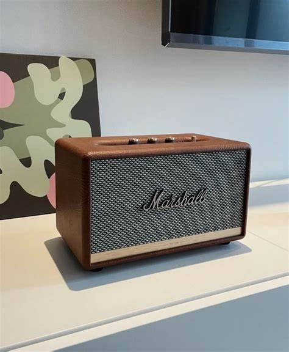
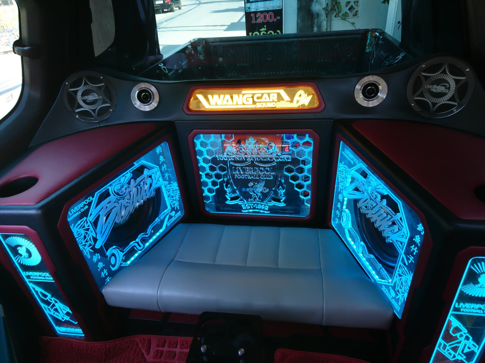
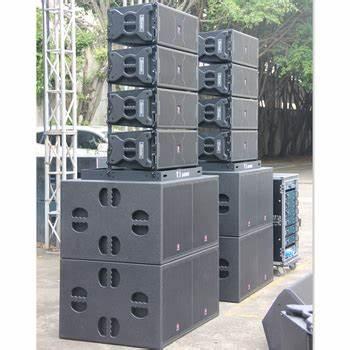

ความแตกต่างของแต่ละชนิด

ตู้ลำโพงบลูทูธ
ลำโพงบลูทูธ คือ ลำโพงที่สามารถใช้ bluetooth เชื่อมต่อกับ เครื่องเล่นเพลง ไม่ว่จะเป็น Iphone, Ipod, tablet เป็นต้น เเทนการใช้สาย มีหลายขนาดเหมาะสำหรับการเปิดฟังในบ้านหรือในห้องที่มีพื้นที่จำกัด เพราะมีขนาดไม่ใหญ่ทำให้เสียงไม่ดังมากถ้าเทียบกับลำโพงรถยนต์และลำโพงกลางแจ้ง

ตู้ลำโพงรถยนต์
เป็นลำโพงที่แตกต่างจากชนิดอื่นตรงที่ ต้องออกแบบตู้ซับวูฟเฟอร์และตำแหน่งการวางดอกลำโพงให้เหมาะกับขนาดของรถที่จะติดตั้ง เพื่อให้ได้ประสิทธิภาพของเสียงตามที่ต้องการ ส่วนมากจะนิยมใช้งานเฉพาะในรถ หากนำตู้ชนิดนี้ไปใช้งานกลางแจ้งเสียงที่ได้ยินก็จะไม่เต็มประสิทธิภาพ

ตู้ลำโพงกลางแจ้ง
เป็นตู้ลำโพงที่ถูกออกแบบมาเพื่อใช้งานนอกอาคารหรือกลางแจ้งโดยเฉพาะ จึงทำให้มีขนาดใหญ่กว่าทั้งลำโพงบลูทูธและลำโพงรถยนต์ เพื่อให้ใช้งานได้ดีในพื้นที่กว้างจึงมีขนาดใหญ่ มีคุณสมบัติที่โดดเด่นกว่าลำโพงทั่วไป ทั้งมีกำลังขับเสียงที่สูง และทนทานต่อสภาพอากาศ